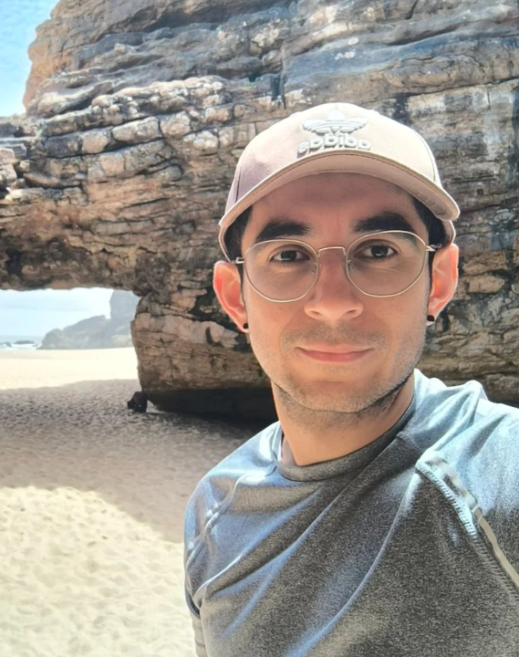

LUIS A. ESTRADA JIMENEZ

I am a researcher and engineer passionate about smart manufacturing, robotics, and the integration of AI into industrial processes. With experience across multiple countries and cultures, I specialize in creating innovative, collaborative solutions that connect technology and people. My work spans industrial automation, bio-inspired systems, and human-machine interfaces. Driven by curiosity, I constantly seek to merge technical expertise with practical, real-world applications to enable sustainable and efficient manufacturing systems.
News
No recent news yet. Stay tuned!
Publications
- Large Language Models to Support Altruistic Collaborative Healing in Smart Manufacturing
- Towards Implementing Altruistic Collaborative Healing: Context, Simulation, and Analysis – Read more
- An Access Control Method Against Unauthorized and Noncompliant Behaviors Leveraging Large Language Models – Details here
- An Altruistic-based Framework to Support Collaborative Healing of Manufacturing Resources in a Self-organized Shop-floor
- Self-organization in Smart Manufacturing – Background, Systematic Review, Challenges, and Outlook
- Gesture Recognition and Machine Learning Applied to Sign Language Translation
Contact
Email: email
LinkedIn: View Profile
Google Scholar: View Profile